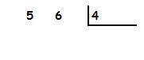
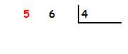
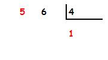
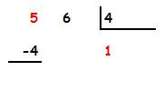
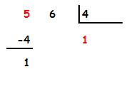
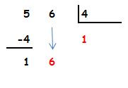
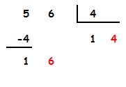
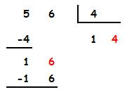
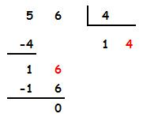

a) Veamos un ejemplo: vamos a dividir 56 entre 4:

Tomamos la primera cifra por la izquierda del dividendo.
Importante: Esa primera cifra que tomamos (en este caso el 5)
tiene que ser igual o mayor que el divisor (4).
Si fuera menor, tendríamos que tomar dos cifras (56).

Buscamos el número de la tabla del divisor (4) cuyo resultado
más se aproxime a 5 sin pasarse. Ese número es 1,
porque 1 x 4 = 4 (es el que más se aproxima a 5 sin pasarse).
El 2 no nos valdría porque 2 x 4 = 8 (se pasa)

Multiplicamos 1 x 4 y se lo restamos a 5.

La resta da 1.

Ahora bajamos la siguiente cifra del dividendo, el 6.

Volvemos a realizar el mismo proceso. Buscamos el número de la tabla
del 4 cuyo resultado más se aproxime a 16 sin pasarse. Ese número
es 4 porque 4 x 4 = 16 (es por tanto el que más se aproxima a 16 sin pasarse).
El 5 no nos valdría porque 5 x 4 = 20 (se pasa).
El 3 tampoco nos valdría porque 3 x 4 = 12 (se aproxima menos que el 4).

Multiplicamos 4 x 4 y se lo restamos a 16.

La resta da 0.

Como ya no hay más cifras del dividendo que bajar la división ha finalizado.
El cociente es 14 y el resto es 0.